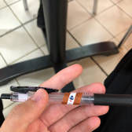

The following is a process journal of one internship experience.
The head of the fresh department was called Mr. Andi. He has worked for several years, and was responsible for weighing and stocking fruits, and inspecting their quality. He took me on a brief tour of the fresh foods’ section, which took up the width of the supermarket. A huge variety of vegetables, fruits, and ingredients scatter throughout the section, from assorted mushrooms, celery, carrots, etc.
I learnt that the number of types, and the differences between each type of fruits. Organic papayas are labelled differently from inorganic papayas, and that they have different nutrients. Red watermelon is different to yellow watermelon in that the yellow is more rare, and sweeter in taste. Following the mini-tour, I found Mr. Andi to be very knowledgeable in his work.
He then found several fruits to be unfit to be sold, or lack quality (some are rotten, leaking liquid, etc.). He told me to bring these fruits to the backroom staff for inspection, the staff told me that these fruits are to be noted (by their serial number), and then immediately thrown away to be disposed. This is done as a form of primary research of how many products are being brought back over a period of time.
Mr. Andi then taught me to properly cut some fruits for display (in half), such as durians, and melons, and that we should get rid of seeds in some. He also taught me how price can be determined by weighing certain types of fruits. First, the serial number of the fruits should be typed in. This is because different fruits have different price rates per mass. Then, the fruit is placed on the balance, with the mass recorded, and the print button pressed. The price sticker would then be available to stick on the plastic bag holding the fruits. For an hour, I applied this practice for several customers.
Left: Watermelons (Red watermelon on the left, and yellow on the right.)
Right: Me with Mr. Andi; photo taken by Mr. Ozy.

.
Mr. Andi then told me to go with Mr. Jefri, who was responsible for fresh fruits in the front of the supermarket before the entrance, where fruits are to be displayed there. Longan and mangoes were displayed at the time, and he helped me wrap the fruits with a styrofoam tray and plastic, while I typed in the price on the scale to get the sticker. After pasting the price on each pack, I placed the packs on the large box for display.
Mr. Jefri then brought be back to the fruits section inside the store and taught me how to properly stock fruits for display. The cavendish banana stock at the time was low, therefore Mr.Jefri brought out a trolley of boxes of bananas for restocking. I saw him ripping the box open and stocking 2 bananas vertically adjacent to each other in the wider side, and only one in the narrower side. He told me to be very gentle in picking up the bananas, as they easily break if we are rough in taking them out of the boxes. I then continued until all the bananas in the boxes are on display evenly on all four sides of the banana stall.
It was around 12:00 pm when I finished, which meant I would have 30 minutes of lunch in the staff canteen upstairs at the back. Staff were not allowed to eat in the cafe inside the store. I went upstairs and ate with Mr. Ozy, who told me to go to the bakery, where I would spend the remainder of the first day. The bakery is located next to the escalators, opposite to the customer service area.
At the bakery, I met with Mr. Heru, the bakery manager. Mr.Ozy introduced him as having a funny personality. Mr. Heru then introduced himself, and welcomed me to his bakery. He gave me a brief explanation of the different types of bread and cakes that the bakery sold. The bakery’s products are fresh and only last a day, therefore Mr.Heru told me that it is very important that you promote the products, so that passing customers would be attracted to buy them.
He gave me a box filled with chiffon cakes, which were on discount. The box he gave me was to be free samples that I should offer passing customers. He told me to mention that there was a discount, and then politely offer the chiffon cakes. I did so for an hour and a half, and felt pleased with myself, because approximately 30% of the people I offered took a bite, and 5 customers decided to eventually purchase the cake.
Meanwhile, Mr.Heru was packaging bread he baked from the oven. At the end, I managed to help him wrap and tape the bread that would be put on display, as he told me to be gentle with the bread. Soon, my shift ended at 3:00 pm, and I went home.
Me and Mr. Heru at the bakery.
Second Day - December 22nd:
After arriving, I was told that Mr.Ozy was unavailable that day. I was then directed by the security officer to the cashier department, where I went inside the office opposite to the cashier area to be briefed with instructions.
The cashier who would assist me on this day was Ms.Neneng. She introduced me to the basic functions of the electronic cash register, the functions of various buttons, and that I should be quick to avoid scanning the product twice. If the product is accidentally scanned more than the desired amount, or if the customer decides to cancel the purchase after it was scanned, the cashier would have to call the operator to cancel it (using a password). This is represented by the jargon “void”.
Products that were bought must be scanned, and if there are more than one of those products, I should press “Multiply”, then the number of products before scanning it. After all the products have been scanned, I should press the “subtotal” button.
In the first hour, I was told to just help in placing the products inside the plastic bag, or the customers’ reusable bag. I packed the goods inside bags and tied them up before lifting them carefully into their basket. This is because there are lots of customers with lots of products to be purchased, and that Ms.Neneng has to work the cashier quickly.
After the line is less congested, she continued to teach me. I should always begin by greeting the customer with a smile, and ask if they have a card from Mega Bank. If the customer says yes, then I would have accept their card, and click the button “Mega” on the screen, which would give the customer a discount price on all the products scanned. (I forgot if it is a 5% or 10% cashback). If the customer says no, then I would proceed to scan all the products.
By the time all the products have been scanned, I must ask the customer their choice of payment. If the customer pays in cash, the subtotal must be rounded to the nearest hundred that is lower than the subtotal (always rounded down). Then, the cash button should be clicked and the amount of cash they give must be inputted to see the value of the change. If the customer pays in credit, their card should be accepted, and the type of card should be clicked on the screen. The card would then be placed in a card reader where the customer’s PIN is inputted, and then the subtotal price. The green button is then pressed, as the receipt is immediately printed out for signature. There are two different readers, one for cards from Bank Mega, and one for cards from other banks.
If the customer purchases more than Rp. 100K, then they would get a free parking receipt for motorcycles. If the customer purchases more than Rp. 500K, then they would get a free parking receipt for cars. The customer must be asked what vehicle they came to park with in order to decide whether they would get the free parking receipt. After that, I should thank the customer for coming to Carrefour, and move on to the next customer.
Before eating lunch, I spent 30 minutes working with the cashier, while Ms.Neneng handled the plastic bag, and if I am having some difficulty, the credit card reader. At the cashier, I did not do too well, as I made several mistakes in scanning products more than once accidentally, leading to several cancelled purchases due to my mistake. Ms.Neneng told me to be quick in the scanning process, as the scanner was sometimes sensitive to scanning more than once. I soon told her that I would be eating lunch, and have a 30-minute break.
After eating lunch upstairs, I came back, and she told me to practice more. When I apologised, she told me not to worry, as when she first started, she also made many mistakes. For an hour, I scanned faster, and was more cautious in calculating the products that were to be purchased. I still made mistakes in scanning at times, but they were less than earlier during the day. I did so until my shift ended 3:00 PM.
Me at the cashier with Ms.Neneng
Third Day - December 23rd:
After arriving, I immediately registered my belongings and went down into the customer service department. I was introduced to the staff at the customer service department. The person that first welcomed me was Ms. Siti. She told me that the customer service department is responsible for depositing items, testing certain products or cancelling purchases, registering points/tokens from receipt, supplying various materials for products, and acting as a cashier for purchased electronic goods.
Alongside Ms. Siti was Ms. Milda, who stood at the other side of the table. She demonstrated what to do when a customer would like to deposit their belongings. First, the material that should be deposited should be taken into account. If it is larger than the box area, then a number card should be given which corresponds to the area above the boxed shelves. If it is smaller than the box, then a number card should be given which corresponds to that on a box on the shelf. Undeclared items will be kept for a certain amount of time (a few days) before being kept in the storage room nearby.
Ms. Milda also explained about the promotional program called “Tamasya Hebat”, where every purchase of Rp. 500K would be rewarded with 1 point. After a certain amount of points are collected, the customer would be able to exchange them with several products (all tourism). To enter this promotion, we must manually input data of the customer’s identity card. Customers would regularly come and give us a receipt where we would approve and convert them into points.
Throughout the day, we did not receive any complaints, or spoke to dissatisfied customers. I served several customers’ deposited belongings, gave some customers certain materials such as ice cream sticks, and ropes for them to tie up boxes. I inputted data of two customers who registered for the “Tamasya Hebat” program, and had relatively little work to do, as there were relatively little customers coming to the customer service department on this day. I left at 3:00PM, and thus my internship period at Carrefour ended.
Me with Ms. Siti and Ms. Milda at the customer service table.
Conclusion:
Over the three days, I have received valuable experience and knowledge of working with and in different aspects of a retail company, and how they work together to function as one. I have met and worked with several great, friendly staff, who truly loves and respect what they do. Although I found that life working is very different from life at school, I felt that it was a much-needed discovery. I am very thankful to have the opportunity to have my first experience in working at Carrefour, and I will keep in mind all the different things I have learnt going forward.